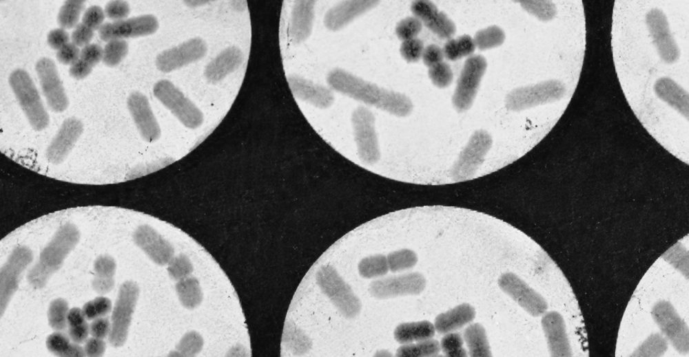
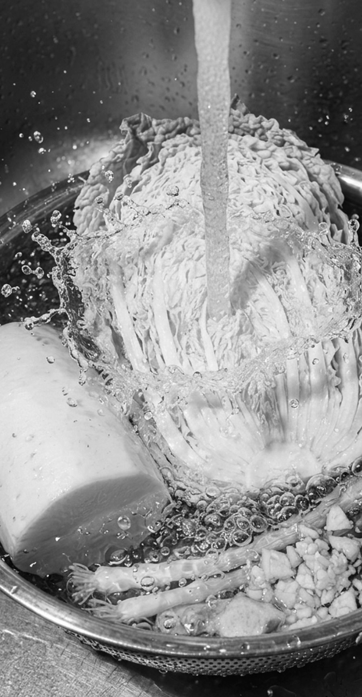

1식품김치 · 김장 김치
2이어 온 해60년, 최초 제작자 어머니 이현진
3대표 균주4종, 전체 균총의 71.8%
4현재 단계가인 새김 · 서고 보관
한 집의 맛
한 가정에서 이어 온 김치의 미생물을 분석하고, 대표 균주 네 가지를 한 획씩 모아 가인으로 새겼습니다.

진행 상황 (1)
지금
다음
분석 결과 (2)
약 62,000개의 유효 서열 가운데 대표 균주 네 가지가 전체 균총의 71.8%를 차지했습니다. 평균 김치의 30.9%보다 균총이 소수의 균에 모여 있어, 이 집만의 뚜렷한 맛을 만듭니다.
대표 균주 상대 존재비
평균 김치에서 1% 안팎으로만 검출되는 효모 Pichia fermentans가 6.8%를 차지했습니다. 이 효모가 만드는 향 성분이 화사한 맛으로 이어진 것으로 해석됩니다.
숙성 유산균 Lactobacillus sakei의 높은 존재비는 6개월에 걸친 저온 숙성과 선명한 산미를 뒷받침합니다.
맛의 분포 (3)
화사한 맛이 7.4점으로 평균(3.5점)의 두 배를 넘었습니다. 신맛과 감칠맛도 평균보다 높고, 단맛과 구수한 맛은 비슷하거나 조금 낮습니다.
10점 척도 · 레퍼런스 128가정 평균과 비교
가인 (4)
획의 수는 대표 균주의 수와 종류를, 획의 모양은 그 균이 만드는 맛을 나타냅니다.
획 읽는 법
발효 환경 (5)
초기 2일 18°C · 저온 숙성 약 6개월
약 2.5%의 염도가 선택압으로 작용해 김치 발효에 적응한 젖산균이 경쟁력을 얻었습니다. 저온에서 오래 숙성되는 동안 산뜻한 맛을 만드는 균에서 깊은 신맛을 만드는 균으로 천이가 천천히 일어났습니다.
저온 숙성 김치에서 나타나는 안정적인 산성 환경으로, 선명한 산미와 맛의 균형이 유지되는 범위입니다.
발효 온도 변화 · °C
손맛 기록 (6)
김민솔님의 김치는 가족이 함께 만들어 온 60년 전통의 김장 김치입니다. 김치를 만드는 모습을 보고 따라 하며 방법을 익혀 왔습니다.

김장 과정
분석 방법 (7)